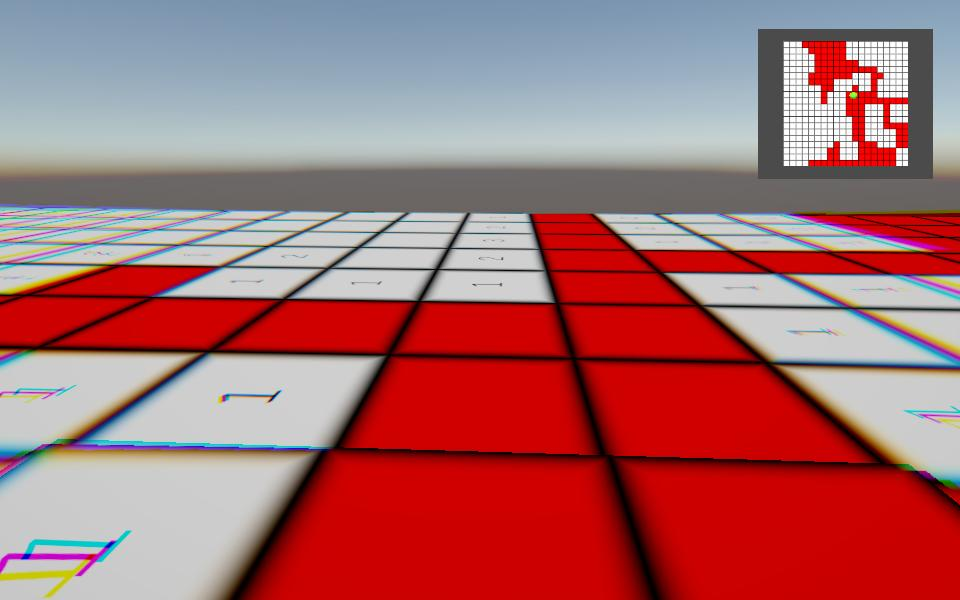

ゲーム一覧 ／ Minesweeper
Minesweeper
マインスイーパーの盤面を3Dの床にして、プレイヤーが歩いてジャンプで着地したマスを開けていくゲーム。R3とUniTask、LitMotionで制作。
- ジャンル
- 3Dアクション × マインスイーパー
- 開発期間
- 約1週間
- チーム構成
- 個人制作
- 使用言語・エンジン
- C# / Unity（6000.3.8f1）

作品概要
20×20マスのマインスイーパーを、3Dの床の上でプレイするゲームです。最初に画面のミニマップでスタート地点のマスをクリックすると、そこにプレイヤーが現れます。あとはマウスで向きを変えながら歩き、ジャンプして着地したマスが開きます。周りに爆弾がないマスは、つながった安全なマスがまとめて開きます。着地するたびに、そのマスを中心に床が波のように跳ねるアニメーションが広がります。爆弾のマスに着地するとゲームオーバーで、リセットボタンで最初からやり直せます。
操作方法
- マウスクリック：ミニマップでスタート地点のマスを選ぶ
- マウス移動：視点の操作
- Wキー：前進
- スペースキー：ジャンプ（着地したマスを開ける）
使用技術
Unity / C# / R3 / UniTask / LitMotion / Input System / Rigidbody / RenderTexture / TextMesh Pro / NaughtyAttributes
担当内容（個人制作のため全体）
- 爆弾の配置と、各マスの周りにある爆弾の数を数える盤面生成
- 安全なマスを連鎖して開く処理と、クリア・ゲームオーバーの判定
- 着地したマスから同心円状に広がる床のアニメーション
- ミニマップ（RenderTexture）のクリック位置をワールド座標に変換するスタート地点の選択
- プレイヤーの移動・ジャンプ・視点操作と、UIの演出
技術解説
- 盤面の生成（MapGenerator）と床のアニメーション（MapAnimation）はMonoBehaviourを継承しない普通のクラスにして、MapViewがまとめて使う形にした。
- マスを開く処理は、QueueとHashSetを使った幅優先探索で、周りに爆弾がないマスから隣のマスへ順に広げていく。
- 床のアニメーションは、着地したマスからの距離（縦横斜めのうち大きいほう）ごとに50ミリ秒ずつ遅らせて動かし、波が広がって見えるようにした。各マスはLitMotionのシーケンスで、だんだん低くなる上下運動を3回くり返す。
- ミニマップを映すRawImageのクリック位置を0〜1に正規化し、専用カメラのScreenToWorldPointでワールド座標に変換してスタート地点を決める。
- クリック・着地・クリア・ゲームオーバーはR3のSubjectで通知し、GameManagerが購読してマップとUIをつなぐ。
開発情報
| ジャンル | 3Dアクション × マインスイーパー |
|---|---|
| 開発期間 | 約1週間 |
| チーム構成 | 個人制作 |
| 担当役割 | 企画・プログラム全般 |
| 使用言語・エンジン | C# / Unity（6000.3.8f1）・Universal Render Pipeline |
| 開発環境 | Visual Studio Code / GitHub |
| 公開先 | ブラウザ版（WebGL・プレイ可能） |
| ソースコード | 実装コードの抜粋（サイト内） |
設計の工夫と選択理由
「何を選んだか」と「なぜ選んだか」、比較した方法をまとめています。
| 設計要素 | 採用した方法 | ねらい | 比較した方法・避けた理由 |
|---|---|---|---|
| マップのクラス分け | 生成とアニメーションを普通のクラスにし、MapViewが持つ | Unityのシーンに置かなくても使え、生成とアニメーションの処理を別々に直せる | MapViewにすべて書く → 盤面の計算と演出が1つのクラスに混ざり、読みにくくなるため |
| マスを連鎖して開く | QueueとHashSetを使った幅優先探索 | 訪れたマスを記録して同じマスを何度も調べず、近いマスから順に開ける | 再帰で隣を開く → 広い範囲が一度に開くと呼び出しが深くなり、処理を追いにくいため |
| 床のアニメーション | 着地点からの距離ごとに少しずつ遅らせ、LitMotionで上下させる | 着地点から波が広がるように見え、どこに着地したかが分かりやすい | 全マスを同時に動かす → 床全体が揺れるだけで、着地点が伝わりにくいため |
| ジャンプ | sinカーブで高さを決め、Transformの位置を直接動かす | 毎回同じ高さ・同じ時間で着地するので、狙ったマスに降りやすい | Rigidbodyに速度を与える方法も試作（RigidJump）→ 着地までの時間が物理の状態で変わりやすいため |
| スタート地点の選び方 | ミニマップのRawImageをクリックし、専用カメラでワールド座標に変換 | 盤面全体を見ながら、好きなマスから始められる | 決まった位置から始める → 毎回同じところから探すことになり、遊び方が単調になるため |
| 機能どうしの連携 | R3のSubjectで通知し、GameManagerで購読してつなぐ | マップとUIがお互いを直接知らなくてよい | 直接メソッドを呼び合う → クラス同士の依存が増えるため |
苦労した点と解決方法
「現象 → 原因 → 対策」の順で、開発中に直面した課題をまとめています。
課題1：ミニマップのクリック位置がずれた
現象
ミニマップをクリックしたときにクリックしたところとは違うところにPlayerが生成されてしまう
原因
クリックしたときに取得できる座標が画面座標であるためワールド座標に置き換えていなかったため
対策
RawImage上のクリック位置をローカル座標に直し、画像のサイズで割って0〜1に正規化する。それをミニマップ用カメラの画面座標に変換し、ScreenToWorldPointでワールド座標を求める
既知の課題と今後の改善予定
既知の課題
- クリア判定が爆弾のマスも含めて「全マスが開いているか」を見ているため、爆弾以外をすべて開けてもクリアにならない。
- 爆弾の位置を選ぶ乱数の範囲が1つ狭く、いちばん端の列と行には爆弾が置かれない。
- 最初に選んだマスが爆弾の場合、そのままゲームオーバーになる。
- Wキーを離したときの減速が1フレームで終わり、すぐに止まってしまう。
次に改善したい点と、その理由
- クリア判定を「爆弾以外のマスがすべて開いたか」に直す。最後までクリアできるようにするため。
- 乱数の範囲を盤面の端まで含め、最初に選んだマスとその周りには爆弾を置かないようにする。運だけで負ける場面をなくすため。
- 減速を数フレームかけて行い、旗を立てる操作も追加する。マインスイーパーらしい推理をしやすくするため。
使用ライブラリ
Unityライブラリ
- R3（Cysharp）
- UniTask（Cysharp）
- LitMotion（AnnulusGames）
- NaughtyAttributes（dbrizov）
- NuGetForUnity（GlitchEnzo）
- Input System / TextMesh Pro / Universal Render Pipeline（Unity Technologies）